Double slit laboratory: before and after
A new laboratory after Fleming's single-photon double slit (The Zero-Point Universe ch. 19, Fig. 19-3). It was a planned entry in the rail; it is now the third experiment, with three scenarios.
Real screens: "before" runs the worktree given as --before (usually the layer below), and "after" runs this one. Click an image to open it at full size. Regenerate with node scripts/compare-screens.mjs --before ../21b-double-slit-lab --out docs/ui-previews/21c-double-slit --set double-slit --title 'Double slit laboratory' --description 'A new laboratory after Fleming'\''s single-photon double slit (The Zero-Point Universe ch. 19, Fig. 19-3). It was a planned entry in the rail; it is now the third experiment, with three scenarios.'.
The rail: Double slit moves from Planned to the experiments

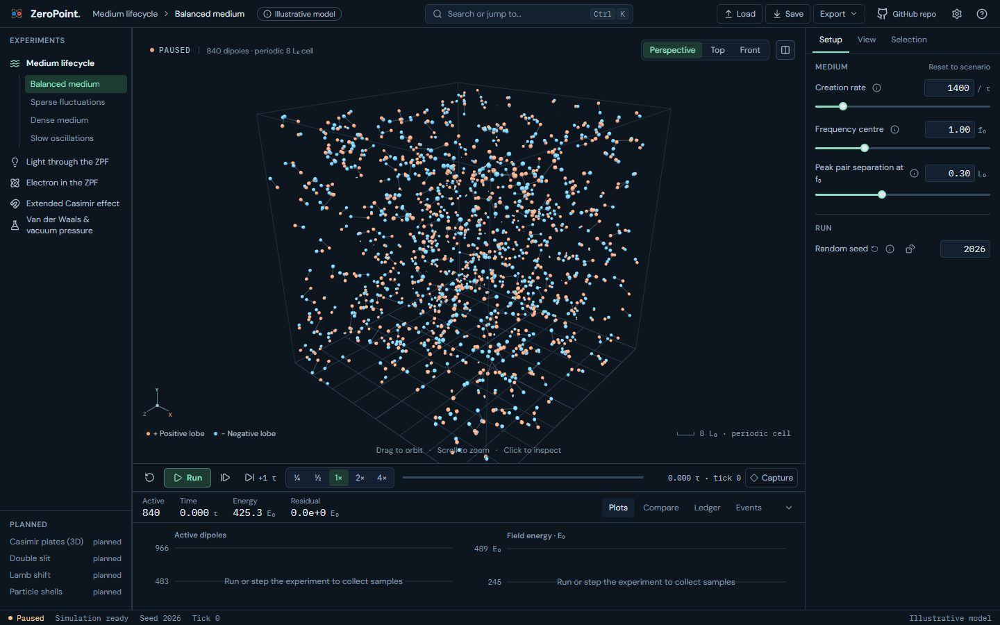

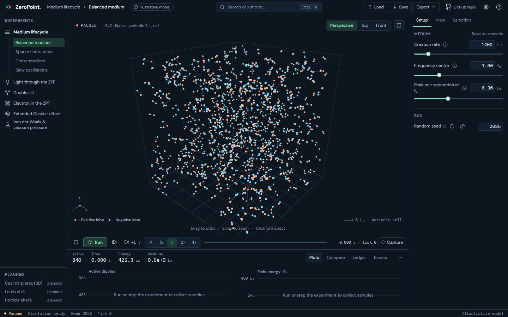
Two slits · tick 105, pair 4 at midlife: its field reaches B through both slits

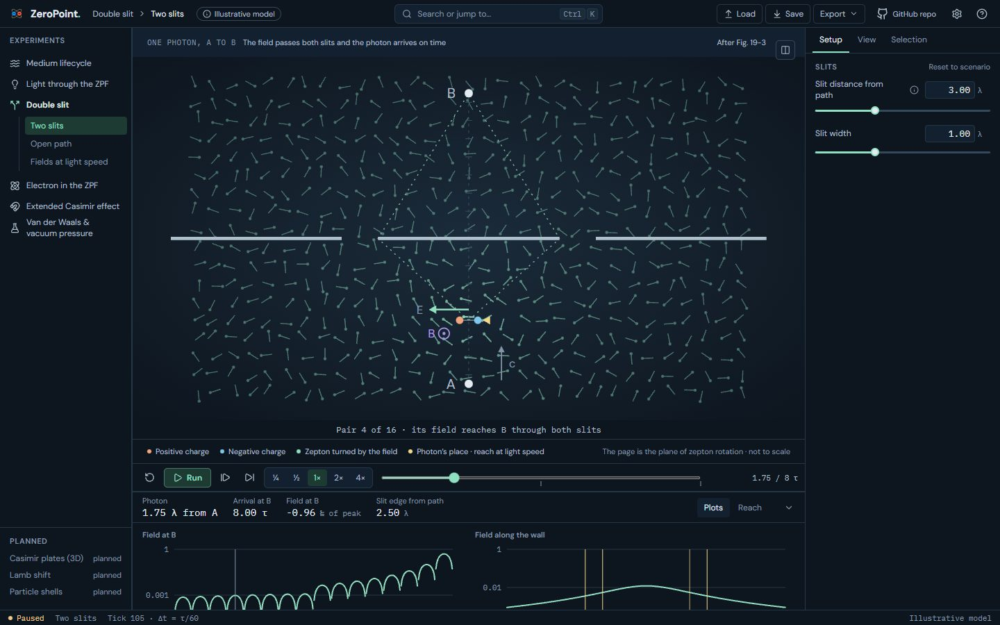
Two slits · tick 285, pair 10 at midlife: induced beyond the wall, on the straight path

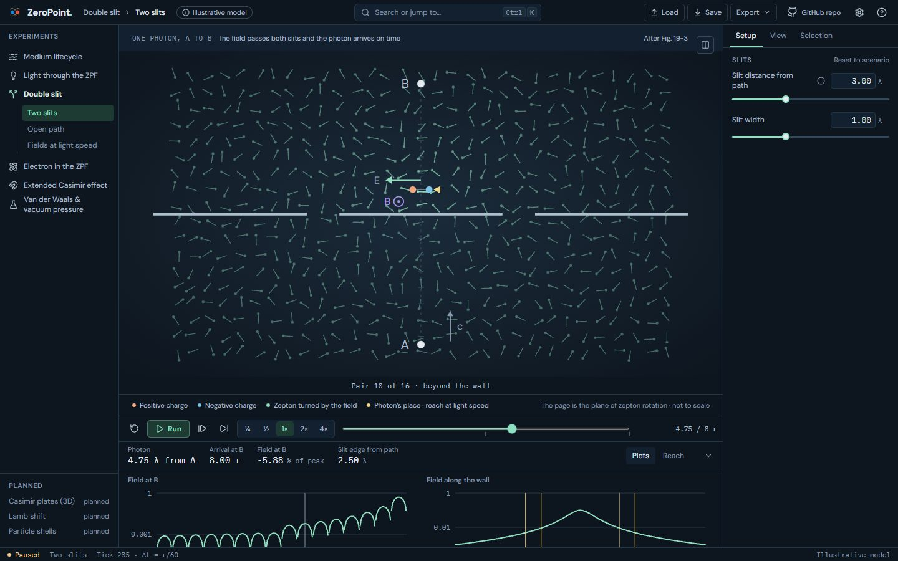
Two slits · tick 480: absorbed at B in the straight-line time

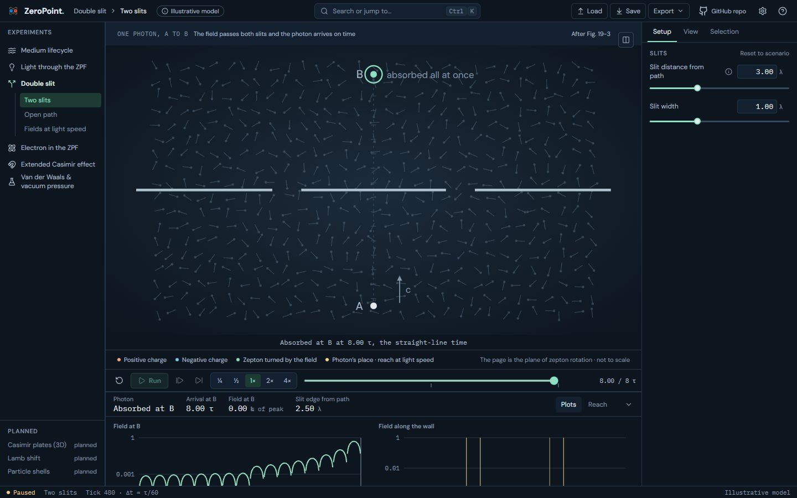
Open path · tick 105: nothing in the way, the reference time

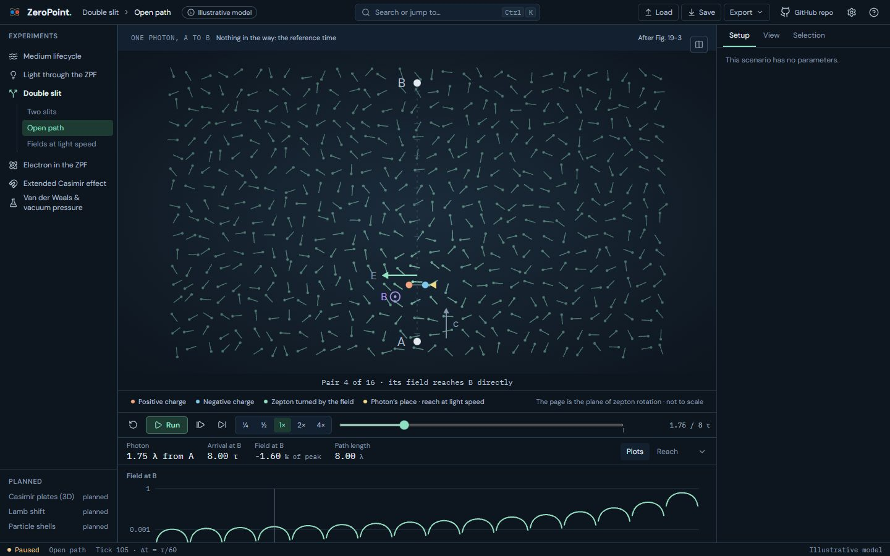
Fields at light speed · tick 195: the field stops half a wavelength from the path

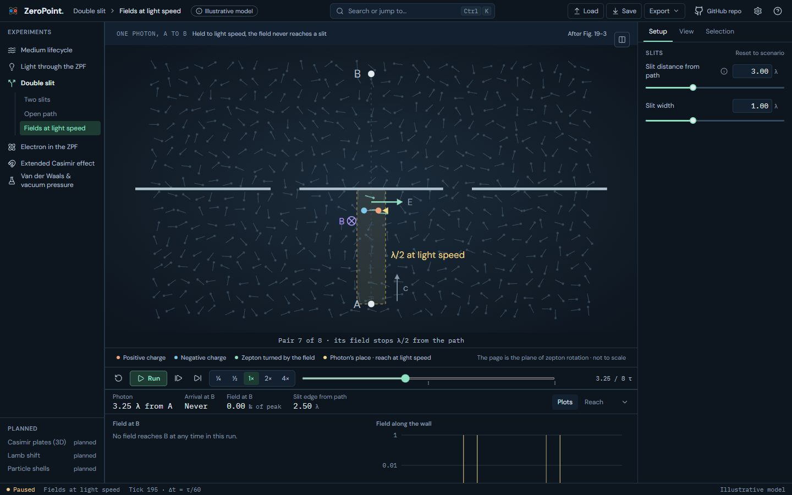
Fields at light speed · tick 300: halted at the wall, nothing arrives

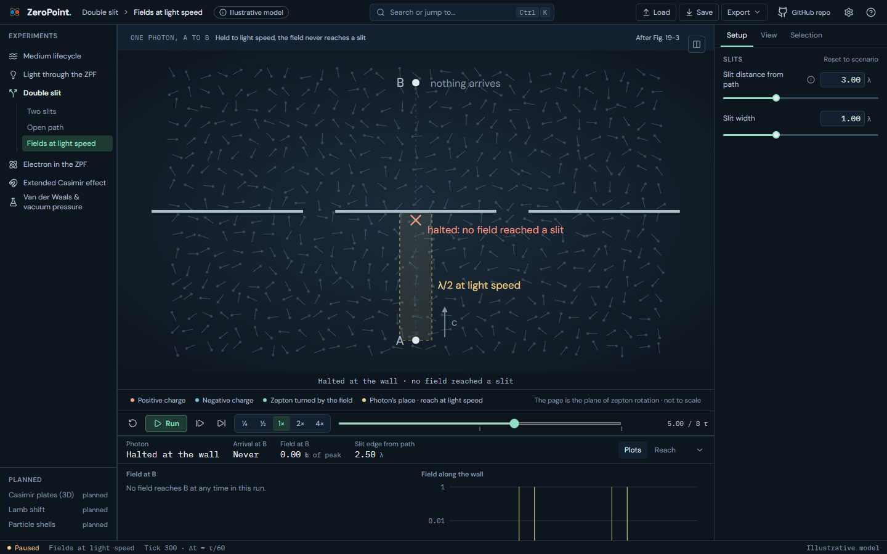
Two slits · the slits moved in and widened (2 λ from the path, 2 λ wide)

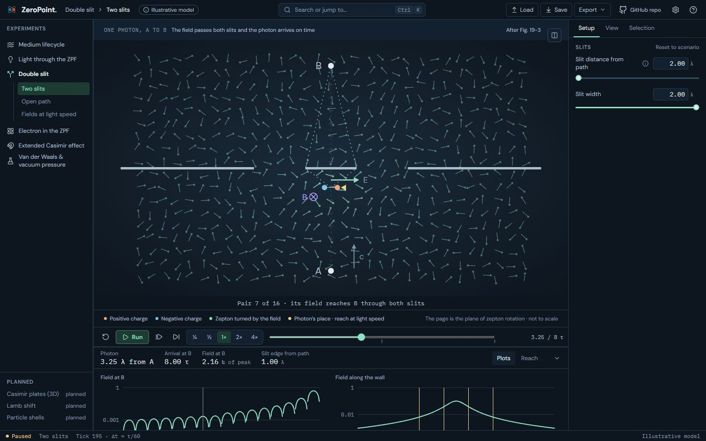
Dock › Plots: the field at B through the run, and along the wall now

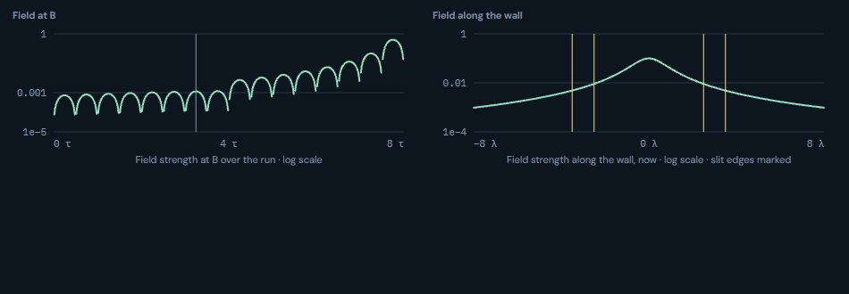
Dock › Reach: how far the field must spread

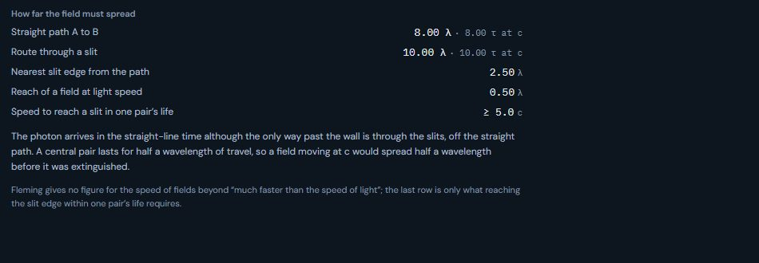
Split view: Fleming’s Fig. 19-3 beside the diagram

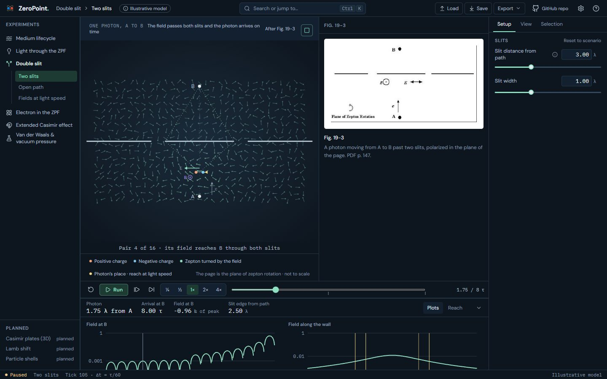
Help › This scenario: what is drawn and what Fleming leaves open

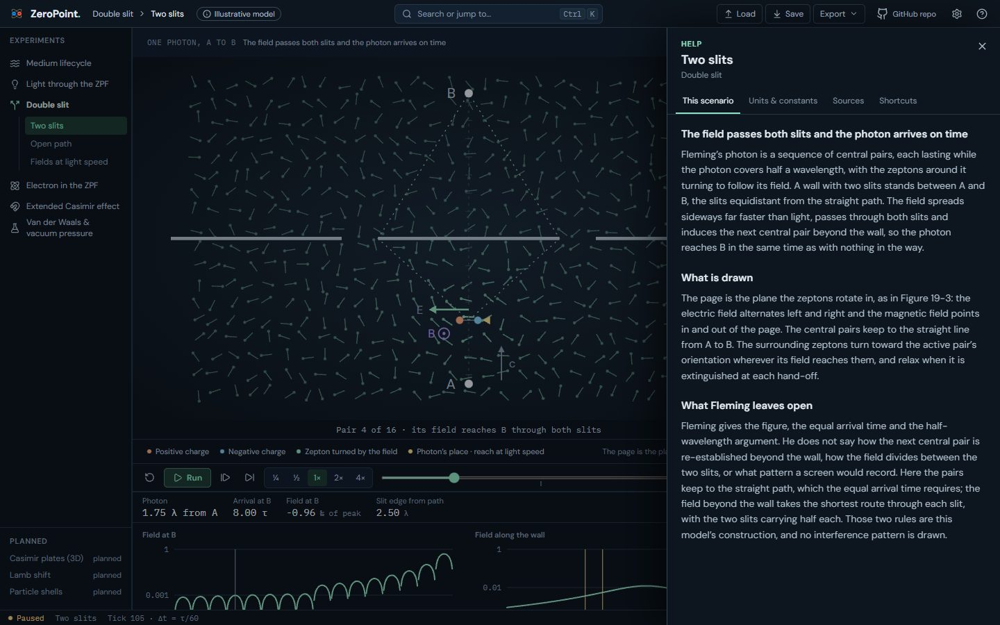
On a phone (390 px)

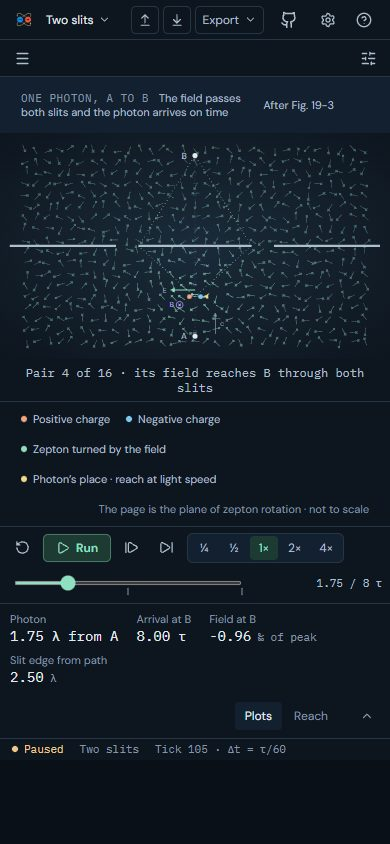